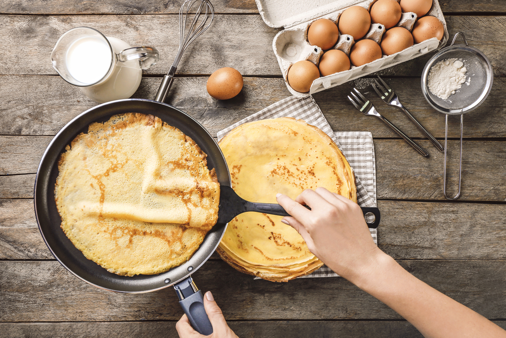

За цим класичним рецептом у вас вийдуть тонкі, еластичні млинці. Вони ідеально підходять для загортання будь-яких видів начинки. Готові налисники можна підсмажити на сковороді: оскільки млинець тонкий, він стане хрустким. Калорийність: 179 кКал/100г Порцій: 30 шт. Інгредієнти: 500 мл молока 3,2%; 2 курячих яйця; 200 г пшеничного борошна; 2 ст.л. рослинна олія; 30 г цукру-піску; 0,5 ч.л. кухонної солі.